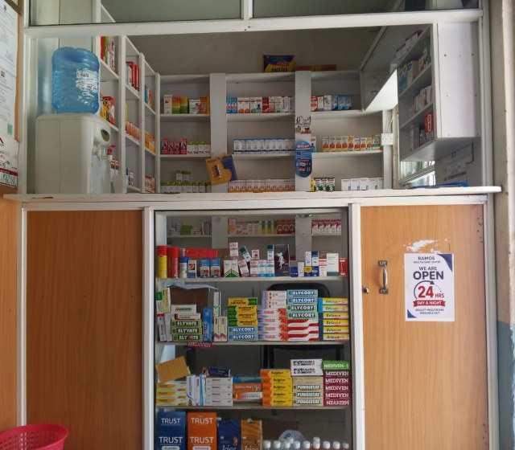

Lab & pharmacy
Same-day testing and in-house medication, all in one place.
Our lab services
Our in-house laboratory runs the tests your diagnosis depends on — no referrals, no waiting days for results.
- Full Haemogram
- Blood Group
- Malaria Test
- Urinalysis
- Typhoid Test
- H. Pylori Test
- Rheumatoid Factor
- VDRL
- Hepatitis
- HbA1C
- UEC
- TFTs
- HB Levels
- Blood Sugar
- HIV Test
- Pregnancy Test
- Salmonella
- Stool for Ova & Cyst
- ASOT
- HVS
- Brucella
- Cholesterol
- LFTs
- Lipid Profile
Pharmacy
Well-stocked in-house chemist so you leave with your medication in hand.
